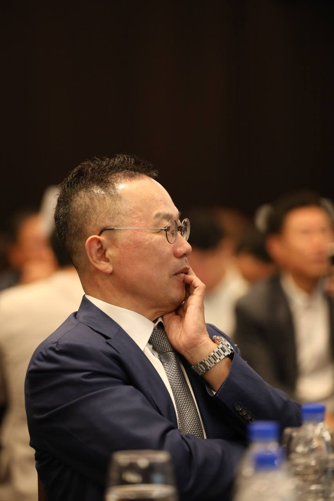

숫자는 끝까지 확인한다
최저가가 싸 보인다는 이유로 입찰하지 않습니다. 실거래가, 호가, 대출, 명도비용과 출구 전략까지 한 장의 수익 구조로 봅니다.
28 YEARS OF REAL AUCTION EXPERIENCE
수많은 낙찰과 명도, 성공과 실패를 지나며 알게 된 것.
좋은 투자는 숫자를 읽는 눈과 사람을 대하는 태도에서 시작됩니다.
경매·부동산 투자 현장 경험
건국대학교 대학원 석사·박사
경매 분야 베스트셀러 저자
전 건국대학교 겸임교수
현장에서 답을 찾는 사람
나는 29년 동안 법원경매 현장을 지켜왔습니다. 권리분석표의 작은 문장 하나, 점유자와 나눈 대화 한마디가 투자의 성패를 가르는 순간을 수없이 보았습니다.
그래서 화려한 수익보다 오래가는 원칙을 이야기합니다. 책을 읽고, 몸을 움직이고, 매일 글을 씁니다. 부를 쌓는 일과 좋은 어른이 되는 일은 따로 있지 않다고 믿기 때문입니다.
“경매는 물건을 낙찰받는 일이 아니라,
사람과 자산의 관계를 새롭게 세우는 일이다.”
경매하는 부자형 · 유영수
부자형의 경매 원칙
최저가가 싸 보인다는 이유로 입찰하지 않습니다. 실거래가, 호가, 대출, 명도비용과 출구 전략까지 한 장의 수익 구조로 봅니다.
밀어붙이는 힘보다 상대를 이해하는 태도가 빠릅니다. 원칙은 단단하게, 대화는 사람답게 합니다.
낙찰은 끝이 아닌 시작입니다. 월세 세팅과 매각, 다음 자산으로 이어지는 흐름까지 보고 결정합니다.
BESTSELLER
권리분석에서 낙찰, 명도, 월세 세팅과 매각까지. 실제 현장에서 겪은 선택과 시행착오를 초보자도 따라갈 수 있는 이야기로 풀어냈습니다.

부는 하루의 습관에서 자란다
새벽 독서와 글쓰기, 꾸준한 운동. 투자의 판단력은 차트 앞에서만 길러지지 않습니다. 매일 자신을 다스리는 작은 루틴이 긴 호흡의 자산을 만듭니다.
매일의 경험을 짧고 단단한 문장으로 나눕니다.
AUCTION · LIFE · PRINCIPLE
경매하면 떠오르는 사람
경매하는 부자형